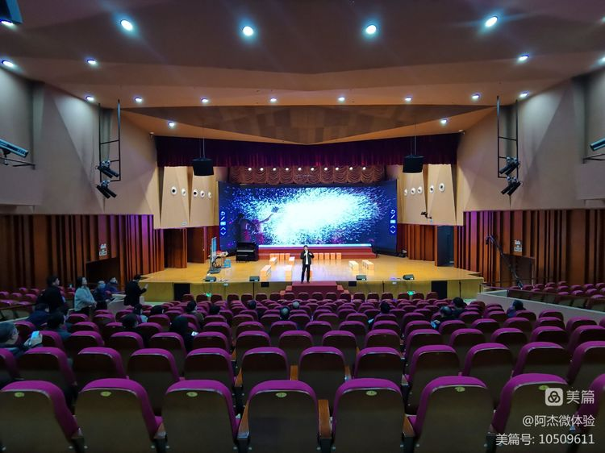

上音实验学校----设施
学校占地50亩，现有教学班56个，在校学生近2000人，
建有专业音乐厅、室内体育馆、创新实验室、智慧图书馆
等现代化教育设施。
学校依托上海音乐学院优质资源，开展民乐、管乐等艺术
教育，形成了以音乐为主体，多元艺术现结合的办学特色，
学生乐团先后在“爱丁堡艺术节”、“长三角民乐展演”等
活动中专场演出。

上音的设施-Installation of Experimental School of Shanghai Conservatory of Music